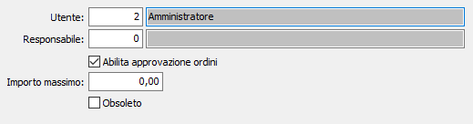

Utenti uffici commerciali
La tabella consente di impostare gli utenti addetti agli uffici commerciali; è possibile indicare anche l'utente responsabile ed abilitare l'approvazione anche con limiti di importo.
Se la tabella è vuota ogni utente è responsabile per gli ordini che inserisce che saranno sempre considerati accettati.

UTENTE: indicare il codice dell'utente. Sul campo sono disponibili le funzioni di ricerca (F9) sulla tabella utenti.
RESPONSABILE: indicare il codice dell'utente responsabile dell'utente sopra inserito; nel caso in cui l'utente sia direttamente responsabile lasciare questo campo a zero. Sul campo sono disponibili le funzioni di ricerca (F9) sulla tabella utenti.
ABILITA APPROVAZIONE ORDINI: consente all'utente di effettuare l'approvazione dell'ordine (casella con segno di spunta). Nel caso l'utente non abbia questa facoltà (casella vuota) l'ordine dovrà essere approvato con l'apposita procedura dal diretto responsabile.
IMPORTO MASSIMO: se valorizzato e la casella precedente ha la spunta, indica il limite massimo per cui un ordine inserito dall'utente debba considerarsi approvato; se l'utente non ha l'abilitazione ad approvare o l'importo massimo è inferiore al valore dell'ordine, questo viene posto direttamente in stato di sospeso.
OBSOLETO: flag attivabile dall’utente per inibire il possibile utilizzo dell’elemento di tabella in esame nelle successive transazioni.